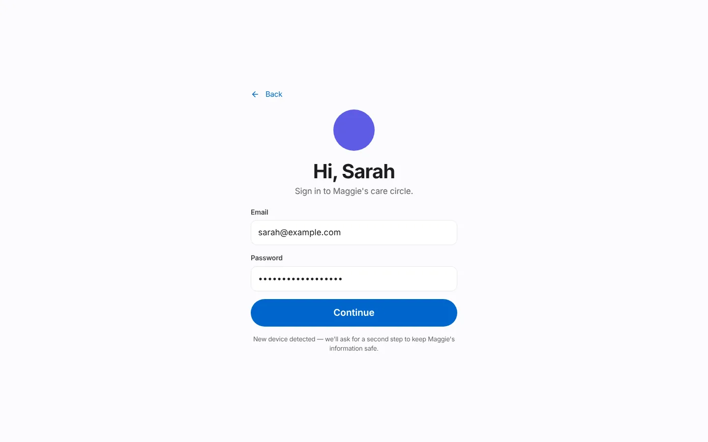
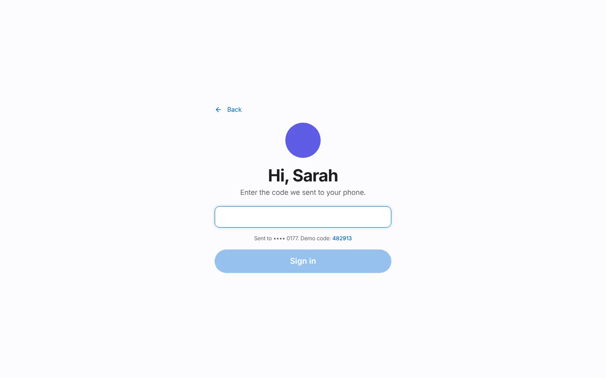

Demo guide¶
A step-by-step script for a five-minute live demo of the Circle Care prototype, followed by a reference of every presenter control. Use it for stakeholder reviews, sprint reviews, portfolio walk-throughs and interviews.
Before you start
- Open the demo in a desktop browser (wide layout) or on a phone (tab-bar layout). Both work.
- Open Demo · Name → Reset demo so the data matches this script.
- Demo MFA code:
482913(tap the code on the screen to fill it). - The demo clock is real local time plus any time you skip ahead. What is "due" depends on when you present; the script works best between about 9:00 AM and 2:00 PM, when Ana is on shift.
Where things are¶
| You want | Go to |
|---|---|
| Website | /#/ (plus /#/how-it-works, /#/features, /#/who-its-for, /#/privacy, /#/pilot) |
| Choose a person | /#/app |
| Switch person or use presenter controls | The Demo · Name pill, top right of the app |
| Review team console | /#/app/review (or Demo mode → Review team console) |
| Pilot dashboard | /#/app/pilot (or Demo mode → Pilot dashboard) |
The five-minute script¶
0:00 — Set the scene (website)¶
- Open the website home page. Read the headline: "Care, in one circle." One sentence: an older adult, their caregivers and their legal guardian on the same page — with the elder in charge of who sees what.
- Click Try the demo.
0:30 — Choose a person and sign in¶
- On Welcome to Circle Care, point out the three people: Maggie (Elder), Ana (Caregiver), Sarah (Legal guardian). Click Sarah.
- Sign-in is prefilled. Click Continue, then enter
482913(or tap the demo code) and Sign in. Mention: "New device detected — we'll ask for a second step." - If the Getting started tour appears, click Skip (or show one card).


1:00 — Guardian: today at a glance¶
- On Sarah's Home, read the headline (e.g. "3 things need you.") and the North Star line.
- Walk the tiles: Check-in, Medicines ring, Tasks, With Maggie now, Health, Next appointment, Alerts — "Notifications never show health details."
- Point at Needs your attention: unread hand-off, pending approvals, uncovered shifts.

1:45 — Elder: SOS¶
- Open Demo · Sarah → Margaret Lee to switch to Maggie. Show the three big buttons.
- Tap SOS, then press and hold the round SOS button for 2 seconds. The "Sending for help in 10" countdown starts; mention Cancel — I'm OK. Tap Send now (or wait).
- Maggie sees "Help is on the way" and Who we're telling: Sarah Alerted, Ana In 2 min if no answer, James In 4 min if no answer.


2:30 — Guardian responds¶
- Switch to Sarah. A red bar reads "Maggie pressed SOS". Tap Respond and then I'm on my way.
- Switch back to Maggie: her screen now says "Sarah is coming". Tap I'm OK now to close the SOS (or close it as Sarah with an outcome note).

3:15 — A missed dose escalates¶
- Open Demo mode → Simulate a missed dose. Lisinopril (high priority) is now 70 minutes late, past both escalation thresholds.
- As Sarah, Home shows "Lisinopril not confirmed · … · high priority" and a new alert.
3:45 — Caregiver: give the dose and hand off¶
- Switch to Ana. (If she is not on shift, tap Check in → Check in — I'm here.)
- On Today, find Lisinopril marked Overdue; tap Given. Point out "Given by Ana at … ✓" — a caregiver-verified dose.
- Optionally tap I've read this on James's hand-off.
- Tap End shift. The Hand-off screen shows a summary "Drafted from your shift". Pick a mood and tap Send hand-off and check out.

4:30 — Close on privacy¶
- Switch to Maggie → My privacy. Show Pause sharing, Share health readings with Sarah, Who can see your information and Who looked at your information.
- Close with the three principles: privacy-first, elder in control, minimum necessary.
Shorter version (3 minutes)
Steps 9–13 (SOS round trip), 14–15 (missed dose) and 16–19 (hand-off). This is the script in the repository README.
Presenter controls reference¶
Open Demo · Name at the top of any app screen. Source: src/components/PersonaSheet.tsx.

Switch person¶
| Option | Effect |
|---|---|
| Margaret Lee — Elder | Signs in as Maggie if needed and opens /app/elder |
| Ana Rivera — Caregiver | Signs in as Ana if needed and opens /app/caregiver |
| Sarah Lee — Legal guardian | Signs in as Sarah if needed and opens /app/guardian |
Presenter controls¶
| Control | Confirmation toast | What it changes |
|---|---|---|
| Skip ahead 30 minutes | "Skipped ahead 30 minutes" | Adds 30 minutes to the demo clock (clockOffsetMin). Shown as Demo time: … (+30 min). |
| Simulate a missed dose | "A dose is now 70 minutes late" | Moves today's Lisinopril time to 70 minutes ago and removes today's Lisinopril record. |
| Simulate a missed check-in | "Maggie missed today's check-in" | Removes today's check-in and moves the check-in window to end 30 minutes ago. |
| Simulate a late caregiver | "Ana is running late" | Clears today's visit and moves the shift start to 25 minutes ago. |
| Trigger SOS from Maggie | "SOS sent from Maggie's phone" | Starts an SOS immediately (no hold or countdown). |
| Simulate a request waiting a day | "Ana's request is now 26 hours old" | Back-dates the first pending approval by 26 hours, triggering the 24-hour reminder. |
| Simulate a sudden heart-rate change | "Maggie's watch sent a fast heart-rate reading" | Raises the latest reading's heart rate by 38 bpm. |
| Simulate a low blood-oxygen reading | "Maggie's watch sent a low oxygen reading" | Sets the latest reading's blood oxygen to 88%. |
| Simulate suspicious access | "James opened 9 records in a minute" | Writes 9 "viewed" audit entries for James, triggering the bulk-access alert. |
| Lock the app now | — | Shows the lock screen immediately. |
| Show the feedback survey | — | Shows the NPS card on the current screen. |
Behind the scenes¶
| Option | Opens |
|---|---|
| Review team console | /app/review — the internal legal-document review queue |
| Pilot dashboard | /app/pilot — the internal pilot success dashboard |
| Reset demo | Asks "Reset the demo to its starting data?", then reseeds the data and returns to /app |
| Back to the website | / |
Troubleshooting¶
| Symptom | Fix |
|---|---|
| Caregiver Today says "Check in to see today's care plan" | Ana isn't on shift (before 8:00 AM, after 2:00 PM, on Sunday, or already checked out). Tap Check in, or reset the demo. |
| Nothing is due on Maggie's home | All of today's doses are done. Use Simulate a missed dose or Skip ahead 30 minutes. |
| A sign-in screen appears after switching | Expected the first time for each person; use code 482913. |
| The app shows "Circle Care is locked" | Inactivity lock (15 minutes for caregiver and guardian). Tap Unlock with Face ID. |
| Photos are blank circles | Stock photos load from Unsplash and need internet access. |